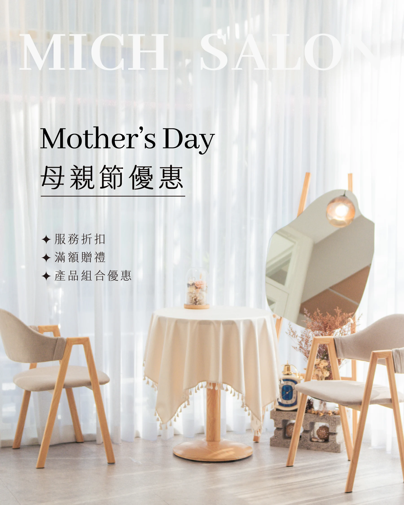
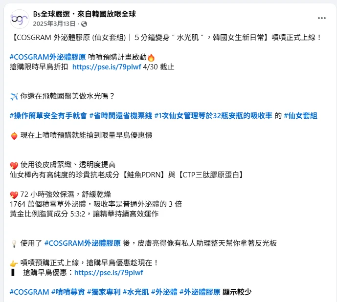

社群圖文
品牌社群內容規劃
依產品、課程與品牌形象安排主題，讓儷人閣與德瑪貝爾的社群維持一致的溝通脈絡。
CONTENT & CREATIVE
依受眾與溝通目的，為品牌找到合適的觀點、語氣與視覺節奏。
社群圖文
依產品、課程與品牌形象安排主題，讓儷人閣與德瑪貝爾的社群維持一致的溝通脈絡。

社群圖文
以資訊層級、視覺一致性與行動引導，傳達產品賣點、課程或活動訊息。
實現夢想是一個能力
Esther Jhang文字文案
婦女節品牌人物貼文系列，透過不同年度的主題與切角，延續創辦人的故事。
明明很努力，
為什麼事情總做不完？
文字文案
從皮膚管理研討會到經營管理課程，依不同受眾情境調整溝通重點。

文字文案
研讀產品資料，整理成消費者可理解的賣點，延伸至銷售頁與募資專案內容。
觀察日常，
找到被看見的切角。
短影音
以社群情境與趨勢為切角，發展貼近品牌的短影音主題。